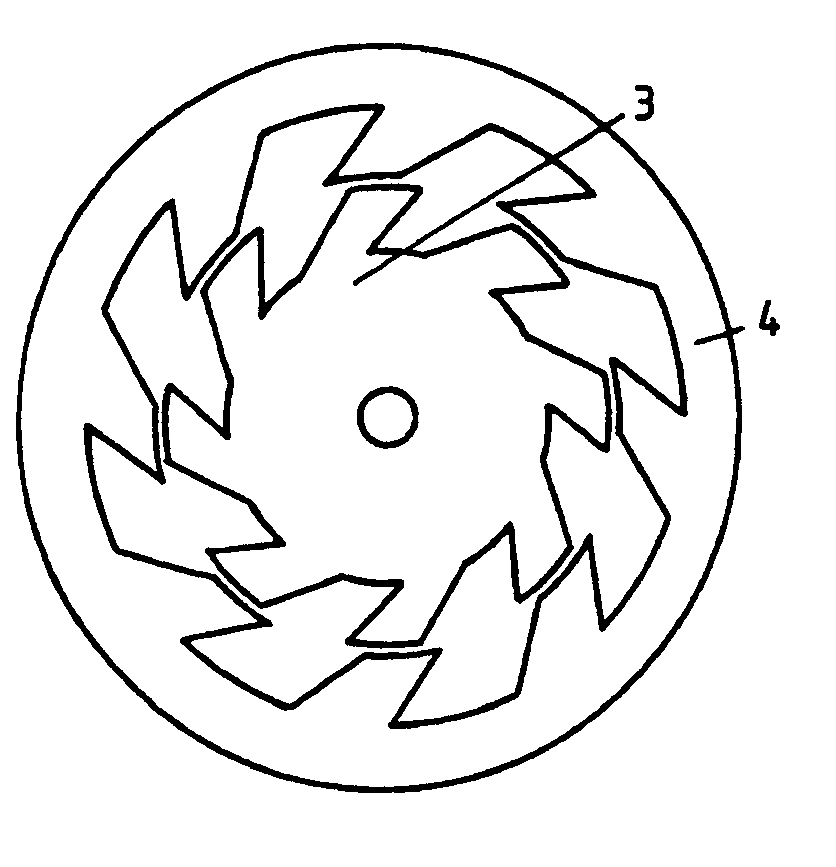

The following is a U.K. Patent Application filed by Harold Aspden on October 10, 1995 with a first publication date of April 2, 1997.
Abstract: A ferromagnetic rotor and stator configuration for a doubly-salient pole electrodynamic machine operating as a magnetic reluctance motor comprises poles which are asymmetric, being tilted so that the pole sides and pole faces of the rotor and stator subtend an acute angle on one side of a pole and an obtuse angle on the other side. This results in the motor having a preferred direction of rotation when magnetically energized, because the torque-producing magnetic attraction between the poles is greater across the acute angle than across the obtuse angle.
